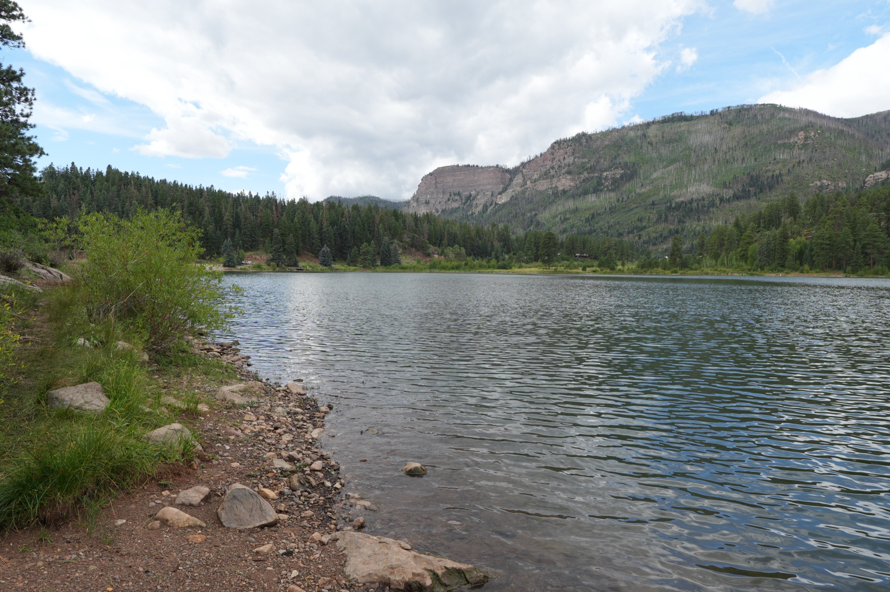
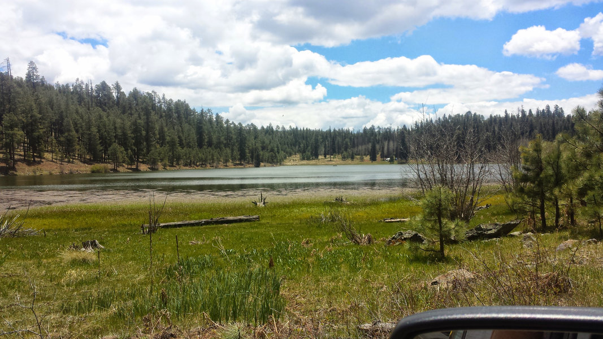

Haviland Lake Campground
Phoenix at 115 degrees, Haviland in the 60s: the long-drive choice when you want clear water, green forest, and a total summer reset.
 By Chris Follin
By Chris FollinROUNDUP
When Phoenix heat stops being funny, I want a camp that buys back sleep, usable mornings, and enough shade or water that being outside still sounds good after lunch. This list is not just "highest elevation wins." It separates the long-drive cooling return from the easier high-country weekends that still rescue a hot summer.
A summer escape can fail two ways: the camp is not cool enough to justify leaving, or the drive and setup are so much work that the temperature drop does not pay for itself. I sort these by what the trip actually gives back: sleep, shade, water, services, quieter mornings, or a bigger reset.

Phoenix at 115 degrees, Haviland in the 60s: the long-drive choice when you want clear water, green forest, and a total summer reset.

The biggest "leave the desert behind" pick: high elevation, primitive logistics, permit expectations, and nights that can feel properly cold.

A practical summer escape when cooler air matters but showers, a store, town backup, and a simpler arrival matter too.

The better pick when summer relief needs to be comfortable: lake access, showers, hookups, paved-road simplicity, and less room for logistics drama.

The obvious Rim escape for good reason: pines, lake time, shorter logistics than the White Mountains, and a real break from low-desert nights.

A stronger choice when you want Rim water without the full Woods Canyon scene, as long as you can pack lighter and bring your own water.

A straightforward Flagstaff lake weekend when you want cooler mornings, water nearby, and enough campground structure to keep the trip easy.
This is the sorting table I would use before deciding whether the drive buys back enough comfort to be worth it.
| Camp | Escape Role | Drive / Region | Services | Shade / Water | Crowd Risk | Best Use |
|---|---|---|---|---|---|---|
| Haviland Lake | Biggest total reset | North of Durango, Colorado; long from Phoenix | Developed sites, potable water, vault toilets, some electric hookups | Pine-and-aspen shade with direct lake access | Medium on prime summer weekends | You can stay long enough for the drive to pay off |
| Pacheta Lake | Maximum cooling return | Longer White Mountains drive; tribal land and permit planning | Primitive; assume self-contained camping | High-country lake, cool nights, limited backup | Lower than obvious Rim picks, but access and permits matter | You want the biggest reset and are ready for rougher logistics |
| Show Low Lake | Easiest serviced escape | White Mountains / Show Low | Campground, showers, dump station, some electric sites, seasonal store nearby | Lake access, mixed shade, town support close enough to matter | Medium-high on good summer weekends | You want relief without making the trip primitive |
| Fool Hollow | Comfort-first lake escape | White Mountains / Show Low | Developed recreation-area comfort with showers and RV-friendly loops | Easy water access, mixed shade, more built-up feel | Medium-high; comfort draws people | You are bringing newer campers or want a softer landing |
| Woods Canyon Lake | Classic Rim heat escape | Mogollon Rim, east of Payson | Developed loops; store, ramp, and rentals nearby | Pine shade and lake time do most of the work | High; reserve early and expect company | You want the proven answer and can tolerate popularity |
| Bear Canyon Lake | Quieter Rim water escape | Mogollon Rim, rougher than Woods Canyon | Primitive; no potable water | Good water reward if you pack light and work for it | Lower than Woods Canyon, but logistics are less forgiving | You want cooler water time without full campground energy |
| Ashurst Lake | Quick Flagstaff lake reset | Flagstaff lake corridor | Designated sites, vault toilets, tables, potable water in season | Open lake feel; wind can matter more than shade | Medium; easier on weekdays | You want a simple Flagstaff overnight with water nearby |
Summer escape decisions get easier once you decide whether the trip needs maximum cool, easy services, or a shorter proven route.
PACHETA LAKE
Choose: you want high-elevation nights, primitive quiet, and a trip that feels far removed from Phoenix. Skip: you need easy services, simple permits, reliable cell, or a low-effort arrival.
SHOW LOW LAKE
Choose: showers, town backup, lake access, and straightforward logistics matter more than solitude. Skip: you want the campsite itself to feel wild or unusually quiet.
FOOL HOLLOW
Choose: you are bringing newer campers, kids, or anyone who will enjoy summer more with showers and easier loops. Skip: you are chasing rougher, quieter, less developed camping.
WOODS CANYON LAKE
Choose: you want pines, lake activity, and a shorter high-country reset than the White Mountains. Skip: the weekend only works if you avoid crowds or make plans last-minute.
BEAR CANYON LAKE
Choose: you can bring your own water, pack light, and tolerate primitive logistics for more breathing room. Skip: you need car-to-site convenience or campground services.
ASHURST LAKE
Choose: you want a Flagstaff-area lake camp with enough structure for an easy weekend. Skip: wind is up, you need dense shade, or you want the strongest temperature drop on the list.